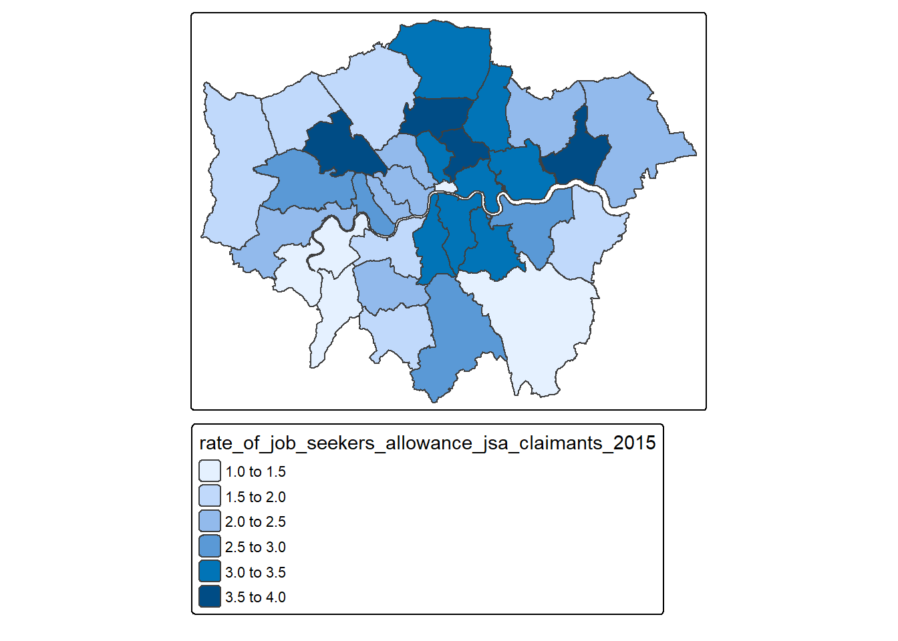

Chapter 2 Introduction to R
2.1 Learning outcomes
By the end of this practical you should be able to:
- Execute basic processing in R
- Examine, clean and manipulate comma seperate value (
.csv) data - Examine, clean and manipulate and plot spatial (
.shp) data - Produce interactive maps
- Evaluate the benefits of different data manipulation and mapping techniques
2.2 Homework
Outside of our schedulded sessions you should be doing around 12 hours of extra study per week. Feel free to follow your own GIS interests, but good places to start include the following:
Assignment
This week you need to assess the validity of your topic in terms of data suitability, then sketch out an introduction and literature review including academic and policy documents (or any reputable source).
Reading
This week:
Chapter 2 “Geographic data in R†from Geocomputation with R by Lovelace, Nowosad and Muenchow (2020).
How to Write a Paper for Publication by Rosenfeldt et al. (2000).
Watching
- Hadley Wickham’s Keynote from the European Molecular Biology Laboratory (EMBL). This will be the same for a few weeks.
Remember this is just a starting point, explore the reading list, practical and lecture for more ideas.
2.3 Recommended listening 🎧
Some of these practicals are long, take regular breaks and have a listen to some of our fav tunes each week.
Adam. Recommended listening this week comes courtesy of “Pound for pound the best rock band on the planet at the minute. In my, not so humble opinion.†– Jake Burns, Stiff Little Fingers. Yes, it’s the Wildhearts and I can confirm that they are the greatest rock band on the planet! Wrap your ears around this:
2.4 Introduction
This practical is LONG but it will take you from not knowing much about R to making freaking cool interactive maps in one practical. As you can imagine, this will be a steep learning curve.
I will give you all the code you need, it’s your job to read through the text very carefully and try to understand what bits of code are doing as you go.
There will be bits of code you don’t fully understand. Don’t worry, the key is to revisit later and try to work out what is going on then. Learning R is a long and iterative process and this is just the start…
If you want to learn more about R and indeed download the latest version for your own use, then visit the R project pages
The Wikipedia page for those who want to know a little of the history of R can be found here
There is an almost endless supply of good R tutorials on the web. If you get stuck or want to learn even more R (and why would you not want to?!), I’d recommend trying some of the following R Tutorial websites:
If you want to really be up to date with the state of the art in R, then bookdown is a fantastic resource. It features free books by some of the pre-eminent names in the R scene — I would urge you to go and take a look.
2.4.1 Online forums are your friend!!
With almost every problem you encounter with R, someone else will have had the same problem before you and posted it on a forum –– someone will then post a solution below.
My usual route is to Google the problem and I’ll then be directed to a post, usually on Stack Overflow, Stack Exchange or Cross Validated. When doing so try to think about the minimal working (or not working) example (MWE), by this i mean remove anything very specific to your problem. I’ve rarely not found a solution to a problem this way.
2.4.2 Health warning
Beware of posting questions on these forums yourself – contributors to these forums (especially the R ones!), whilst almost always extremely knowledgeable about R, have a bit of a reputation for being insert familiar pejorative term for less-than-polite-human-being here! As you might expect, people who have enough time to become total experts in R, have little time to work on their social skills!! Fortunately though, some other poor chump has usually taken that hit for you and you can still find a useful answer to your problem.
If you are specifically more interested in the spatial side of R, then Alex Singleton and Chris Brunsdon at the Universities of Liverpool and Maynooth also have a number of very useful R Spatial Tutorials – http://rpubs.com/alexsingleton/ & http://rpubs.com/chrisbrunsdon/
Robin Lovelace in Leeds is also frequently at the bleeding edge of developments in R spatial stuff, so keep an eye on his website. Robin has also made a book on GeoComputation in R, which you should definitely read! — https://geocompr.robinlovelace.net/
These websites are also very very good: https://pakillo.github.io/R-GIS-tutorial/ and http://www.maths.lancs.ac.uk/~rowlings/Teaching/UseR2012/cheatsheet.html
2.4.3 R and RStudio
When you download and install R, you get the R Graphical User Interface (GUI) as standard (below). This is fine and some purists prefer using the clean, unfussy command-line original, but it has some limitations such as no graphical way to view data tables or keep track of what is in your working directory (there are a number of others too).

Fortunately there are a number of software environments that have been developed for R to make it a little more user-friendly; the best of these by a long way is RStudio. RStudio can be downloaded for free from https://www.rstudio.com/. We covered the RStudio layout last week.
2.4.4 Getting started
If you are some kind of masochist, you are welcome to use the bundled R GUI for all of your work. If pain is not your thing, then for this practical (and future practicals) I will assume that you are using RStudio.
- From the start menu on your computer, find and run RStudio
Once RStudio has opened, the first thing we will do is create a new project – projects enable you to organise your work effectively and store all of the files you create and work with for a particular task.
To create a new project (and this will vary a little depending on the version of RStudio you are using) select File > New Project
Select Start a project in a brand new working directory and create a new project in a directory of a new ‘wk2’ directory on your N: drive:

My file directory (the second box here) will be different to yours as this is my teaching resources folder. Keep yours simple N:/GIS/wk2.
Setting up a project is extremely useful as it lets you easily access your data and files…for example….the flytipping .csv we used last week is stored at the file path
However as i’ve set my R project up in the CASA0005repo folder with different data folders for each week i can just use:
If i had the .csv file in the same folder as my project i could just use
You can run this in the Console area now or within a script which we will now go over…
I’d strongly recommend you think about how you will store data within your project. Is it sensible to just dump all your data into the project folder or perahps create a new folder (either in R) or how you would normally do so in Windows / OS X and keep your raw data in that folder…like i have done…Here you can see that i’m in my project folder (red box on the right) and i’ve made new folders for all my data (each practical here) and images that are shown throuhgout….nice and organised!

2.4.5 Basics
- R has a very steep learning curve, but hopefully it won’t take long to get your head around the basics. For example, at its most simple R can be used as a calculator. In the console window (bottom left), just type the following and press enter:
## [1] 6or
## [1] 100As you can see R performs these calculations instantly and prints the results in the console. This is useful for quick calculations but less useful for writing scripts requiring multiple operations or saving these for future use.
To save your scripts, you should create a new R Script file. Do this now: Select File > New File > R Script.
The R Script should open up on the top-left of your GUI. From now on type everything in this R script file and save it
2.4.6 Scripts and some basic commands
- Usually one of the first things to do when starting a new R Script is to check that you are in the correct working directory. This is important especially if you are working on multiple projects in different locations. To do this type the following into your new empty R Script:
## [1] "C:/Users/Andy/OneDrive - University College London/Teaching/CASA0005/2020_2021/CASA0005repo"To run this line, hold Ctrl (Cmd on a Mac) and press the Return(↲) key (if you are in the standard R installation, you would run your script with Ctrl R). You should now see your current working directory appear in the console.
Because of the new project we have already set up, this working directory should be correct, but if for any reason we wanted to change the working directory, we would use the
setwd()function. For example, we wanted to change our directory to the documents folder on the C drive, we could run (don’t do this now):
When we are sure we are working in the correct working directory, we can save our script by clicking on the save icon on the script tab. Save your script as something like “wk2_part1†and you will see it appear in your files window on the right hand side. As you build up a document of R code, you should get into the habit of saving your script periodically in case of an unexpected software crash.
We can now begin to write a script without the need to run each line every time we press enter. In the script editor type:
## [1] 3Select (highlight) the three lines and run all three lines with Ctrl Return(↲). You will notice the lines appear in the console (the other window). If you type C and press enter in the console (C and then ctrl return in the script window) you should have the number 3 appear. From now on I recommend you type all the commands below in the script first and then run them. Copying and pasting from this document won’t necessarily work.
You will also notice that in RStudio, values A, B and C will appear in your workspace window (top right). These variables are stored in memory for future use. Try giving A and B different values and see what happens. What about if you use lower case letters?
You have just demonstrated one of the powerful aspects of R, which is that it is an object oriented programming language. A, B and C are all objects that have been assigned a value with the <- symbol (you can also use the = sign, but it operates slightly differently to <- in R, plus the arrow assignment has become standard over the years. Use alt - to type it automatically). This principle underlies the whole language and enables users to create ever more complex objects as they progress through their analysis. If you type:
## [1] "A" "all_pkgs" "B" "C" "con" "mycsv" "session"
## [8] "shape"R will produce a list of objects that are currently active.
will remove the object A from the workspace (do ls() again to check this or look in your workspace window).
2.4.7 Functions
- Both
rm()andls()are known as functions. Functions are the other fundamental aspect to the R language. Functions can be thought of as single or multiple calculations that you apply to objects. They generally take the form of…(don’t run these)
Where the object is some form of data and the arguments parameterise what the function will do.
You could save the ouput to a new object using something like…
- You can write your own functions to carry out tasks (and we’ll come onto that in subsequent practical sessions), but normally you will just used one of the virtually infinite number of functions that other people have already written for us.
2.4.8 Basic plotting
One common function is the plot() function for displaying data as a graphical output. Add these lines to your script and run them as before and you can see some plot() outputs:
#create some datasets, first a vector of 1-100 and 101-200
Data1 <- c(1:100)
Data2 <- c(101:200)
#Plot the data
plot(Data1, Data2, col="red")#just for fun, create some more, this time some normally distributed
#vectors of 100 numbers
Data3 <- rnorm(100, mean = 53, sd=34)
Data4 <- rnorm(100, mean = 64, sd=14)
#plot
plot(Data3, Data4, col="blue")
- In the code above, you will have noticed the
#symbol. This signifies that whatever comes after it on that line is a comment. Comments are ignored by the R console and they allow you to annotate your code so that you know what it is doing. It is good programming practice to comment your code extensively so that you can keep track of what your scripts are for.
Warning Heed our advice now and comment your code it will save you time in the future!
2.4.9 Help
- The previous lines of code also demonstrated a number of functions:
c()concatenates a string of numbers together into a vector. 1:100 means produce the integers between and including 1:100, theplot()function plots the two data objects and includes a parameter to change the colour of the points. To understand what a function does, you can consult the R Help system. Simply type a question mark and then the function name; for example:

- In RStudio you will see the help file appear in the Help window in the bottom right of the GUI. Here you can also search for the help files for other functions in the search bar.
2.4.10 Data structures
- Objects in R can exist as a number of different data structures. These include a matrix, an array, a vector, a data frame and a list.
The main criteria for division of these structures is data type homogeneity.
A vector, matrix and array must only contain data of the same type (e.g. numeric or text)
A list or data frame can contain a mixture of data types (e.g. numeric and text).
Further divisions are then made based on the number of dimesions (1D, 2D, 3D or more) each can have…

For the purposes of this practical we will focus on data frames. These are the most flexible data format in R (although tibbles are now becoming popular as well — they are just more flexible versions of data frames, for example they can have a list as a column). Data frames can be conceptualised in a similar way to a spreadsheet with data held in rows and columns. They are the most commonly used object type in R and the most straightforward to create from the two vector objects we just created.

- If you have a very large data frame (thousands or millions of rows) it is useful to see only a selection of these. There are several ways of doing this:
You might have noticed the syntax (code) %>%, this is called a pipe and is an operator is part from the magrittr package. magrittr is an entirely new way of thinking about R syntax that cleraly expresses a sequence of multiple operations. It is useful to think of the pipe operator as simply meaning “then”. Do this THEN do this THEN do that.
You can also view elements of your data frame in RStudio by simply clicking on it in the top-right Environment window:

2.4.11 Elements of a data frame
- When programming you will frequently want to refer to different elements in a data frame or a vector/list. To select elements of a data frame, or subset it, you can refer specifically to ranges or elements of rows and columns. These are accessed using the single square bracket operator [], with the form:
Rows are always referenced first, before the comma, columns second, after the comma.
- Try the subsetting your df data frame with the following commands to see what is returned:
- You will note that the column headings are the names of the original objects creating the data frame. We can change these using the
rename()function fromdplyrthat is loaded as part of thetidyversepackage, we will come to this next:
dplyr is a grammar of data manipulation, it has multiple verbs that allow you to change your data into a suitable format. These include select(), filter(), summarise(), which can also be applied to groups in datasets using group_by(). dplyr will be used throughout this course.
In the majority of cases you provide some kind of data to dplyr followed by a %>% then a verb (or other function), then another %>% and more verbs of functions if needed. As in the code above you can also assign the output to an object with <-.

To select or refer to columns directly by name, we can either use dplyr again!
However, you should be aware of other methods for doing this, as not all spatial data is compatible with dplyr yet, such as raster data, which will be important for next week. So we can also use the $ operator, which takes the form data.frame$columnName, e.g.
or we can use the double square bracket operator [[]], and refer to our column by name using quotes e.g.
This again is useful if you have a lot of columns and you wish to efficiently extract one of them.
2.5 Reading data into R
One of the most tedious things a spatial analyst / data scientist has to do is clean their data so it doesn’t cause problems for the software later. In the past, we would have needed to do this by hand — these days, we can use software to do much of this for us.
I will now give you two options to arrive at a nice cleaned dataset. For this example we are going to use the London Datastore Catalogue.
Go to the London Data store and get the Ward Profiles and Atlas and download the excel document for ward profiles.
2.5.1 Old skool cleaning
Open the
ward-profiles-excel-version.xlsfile in Excel, and save asLondonData.csvinto your RProject folder, week 2.Open your new
.csvfile in Excel. There might be some non-numeric values inside numeric columns which will cause problems in your analysis. These need to be removed before proceeding any further. To remove these, you can use the replace function in Excel. In the home tab under ‘Editing’ open up the find and replace dialogue box and enter the following into the find box:
#VALUE! n/a
Leave the replace box empty each time and click Replace All to remove these from your file, before saving the file again.
- Once you have cleaned out all of the trixy characters from the file, to read it into R, we will use the
read.csv()function:
LondonDataOSK<- read.csv("prac2_data/ward-profiles-excel-version.csv",
header = TRUE,
sep = ",",
encoding = "latin1")Note, I’ve made an R project for all these practicals, which is why my file path starts with
prac2_data/. If you save the.csvin the same folder as the.Rprojthen you can just use:
If you look at the read.csv() help file - ?read.csv - you will see that we can actually include many more parameters when reading in a .csv file. For example, we could read in the same file as follows:
# by default in R, the file path should be defined with /
#but on a windows file system it is defined with \.
#Using \\ instead allows R
#to read the path correctly – alternatively, just use /
LondonDataOSK<- read.csv("prac2_data/ward-profiles-excel-version.csv",
header = TRUE, sep = ",", encoding = "latin1")This would specify that the first row of the file contains header information; and the values in the file are separated with commas (not ; or : as can be the case sometimes).
2.5.2 Here
However, this is also another more straightforward way to read in files that was devloped in 2017 to make it more intuitive to find and load files using the here package. You need to install and load it:
## here() starts at C:/Users/Andy/OneDrive - University College London/Teaching/CASA0005/2020_2021/CASA0005repoThink of here() as a command that is just poitning to a file path, to find out where is pointing use…
This is my working directory for this book project! Now i can use this to load my data that is in my practical 2 folder just like this….
LondonDataOSK<- read.csv(here::here("prac2_data","ward-profiles-excel-version.csv"),
header = TRUE, sep = ",",
encoding = "latin1")This just removes any need for ever using a / or \\ in your file path. As with everything in code, there is no right way, use what suits you.

2.5.3 New skool cleaning
To clean our data as we read it in, we are going to use a package called readr which also comes bundled as part of the tidyverse package.

The tidyverse is simply a collection of pacakges relevant for data science, containing almost everything you need to become a kick-ass data scientist.
Now let’s use the readr package… that allows loads of data manipulation …for example…

Here we will use it to just read in a .csv file (directly from the web this time — read.csv can do this too) and clean text characters out from the numeric columns before they cause problems:
#wang the data in straight from the web using read_csv,
#skipping over the 'n/a' entries as you go...
LondonData <- read_csv("https://files.datapress.com/london/dataset/ward-profiles-and-atlas/2015-09-24T14:21:24/ward-profiles-excel-version.csv",
locale = locale(encoding = "latin1"),
na = "n/a")Note the use of read_csv here as opposed to read.csv. They are very similar, but read_csv is just a bit better. Read this blog post for more information. Also, for those python fans out there —IT’S NOT THE SAME FUNCTION AS READ_CSV IN PYTHON
What is locale = locale(encoding = "latin1")?…good question…it is basically the encoding of the data (how it is stored). There are a few different formats such as UTF-8 and latin1. In latin1 each character is 1 byte long, in UTF-8 a character can consist of more than 1 byte. To my knowledge the default in R is encoded as latin1, but readr (the package we are using to read in the .csv is UTF-8 so we have to specify it.
2.5.4 Examining your new data
- Your new data has been read in as a data frame / tibble (remember a tibble is just a data frame with a few extra bells and whistles). If you ever need to check what data type your new data set is, we can use the
class()function:
## [1] "spec_tbl_df" "tbl_df" "tbl" "data.frame"We can also use the class() function (from base R) within another two functions summarise_all() (from dplyr) and pivot_longer() (from tidyr) to check that our data has been read in correctly and that, for example, numeric data haven’t been read in as text or other variables. Run the following line of code:
Datatypelist <- LondonData %>%
summarise_all(class) %>%
pivot_longer(everything(),
names_to="All_variables",
values_to="Variable_class")
Datatypelist## # A tibble: 67 x 2
## All_variables Variable_class
## <chr> <chr>
## 1 Ward name character
## 2 Old code character
## 3 New code character
## 4 Population - 2015 numeric
## 5 Children aged 0-15 - 2015 numeric
## 6 Working-age (16-64) - 2015 numeric
## 7 Older people aged 65+ - 2015 numeric
## 8 % All Children aged 0-15 - 2015 numeric
## 9 % All Working-age (16-64) - 2015 numeric
## 10 % All Older people aged 65+ - 2015 numeric
## # ... with 57 more rowsWe cover pivot_longer() later in this practical, but for now we’ve simply grouped all our variables into one LONG column adding another column that contains the class.
You should see that all columns that should be numbers are read in as numeric. Try reading in LondonData again, but this time without excluding the ‘n/a’ values in the file, e.g.
LondonData <- read_csv("https://files.datapress.com/london/dataset/ward-profiles-and-atlas/2015-09-24T14:21:24/ward-profiles-excel-version.csv",
locale = locale(encoding = "latin1"))Now run the Datatypelist code again — you should see that some of the columns (those the n/a values in) have been read in as something other than numeric. This is why we need to exclude them. Isn’t readr great for helping us avoid reading in our numeric data as text!
If you ever wish to quickly edit data, then use edit()
- It is also possible to quickly and easily summarise the data or look at the column headers using
## column1 column2
## Min. : 1.00 Min. :101.0
## 1st Qu.: 25.75 1st Qu.:125.8
## Median : 50.50 Median :150.5
## Mean : 50.50 Mean :150.5
## 3rd Qu.: 75.25 3rd Qu.:175.2
## Max. :100.00 Max. :200.0## [1] "Ward name" "Old code"
## [3] "New code" "Population - 2015"
## [5] "Children aged 0-15 - 2015" "Working-age (16-64) - 2015"2.5.5 Data manipulation in R
Now we have some data read into R, we need to select a small subset to work on. The first thing we will do is select just the London Boroughs to work with. If you recall, the Borough data is at the bottom of the file.
2.5.5.1 Selecting rows
- Your borough data will probably be found between rows 626 and 658. Therefore we will first create a subset by selecting these rows into a new data frame and then reducing that data frame to just four columns. There are a few ways of doing this:
We could select just the rows we need by explicitly specifying the range of rows we need:
We can also do this with dplyr… with the slice() function, taking a “slice†out of the dataset…
However, we can instead try a cool ‘data sciency’ way of pulling out the rows we want with the knowledge that the codes for London Boroughs start with E09 (the wards in the rest of the file start with E05).
dplyr has a cool function called filter()that let’s you subset rows based on conditions…
 Here, we could filter based on a variable, for example extracting all the wards where female life expextancy is greather than 90.
Here, we could filter based on a variable, for example extracting all the wards where female life expextancy is greather than 90.
However, our New code column that holds Borough codes can’t be filtered like this as it’s in a character format…in cases like this we can use the function str_detect() from the stringr package in combination with filter() from dplyr. Both these packages are part of the tidyverse again!
Check it worked:
😎AWWMAHGAWD!!! 😎Pretty cool hey?
What that code is saying is stringr look for the rows that have the ward code like E09, then filter these and store in the object LondonBoroughs
The stringr package is really great and if you ever need to manipulate text type data then it’s the place to start.
You will notice that you will have two rows at the top for the City of London. This is because it features twice in the data set. That’s fine, extract only unique rows with distinct(), again from dplyr:
2.5.5.2 Selecting columns
We can select columns if we know which index we want, starting from the first column that’s 1..
We can also replicate this with dplyr with select()
You will have noticed the use of square brackets above –– these are very useful in R. The
c()function is also used here — this is the ‘combine’ function — another very useful function in R which allows arguments (in this case, column reference numbers) into a single value.However, we could also again use a more ‘data sciency way’…selecting the columns that contain certain words …
2.5.5.3 Renaming columns
- You will notice that the column names are slightly misleading as we are now working with boroughs rather than wards. You probably will also be annoyed (like me!) that the column names are full of
...that just make eveything hard to read. So, let’s rename the wards column to boroughs (usingrename()like we did earlier), then using theJanitorpackage tidy everything up…
library(janitor)
LondonBoroughs <- LondonBoroughs %>%
dplyr::rename(Borough=`Ward name`)%>%
clean_names()By defualt Janitor removes all capitals and uses an underscore wherever there is a space, this would be the same as using setting the case argument to snake…

If you wanted to now change it every word having a capital letter you would run…but don’t do this now.
2.5.5.4 More dplyr verbs
What about determining both (a) the average of male and female life expectancy together and (b) a normalised value for each London borough based on the London average. Then selecting only the name of the Borough, mean life expectancy and normalised life expectancy, arranging the output based on the normalised life expectancy in descending order…
To do this we will rely on the mutate() function that let’s us add new variables based on existing ones…

Life_expectancy <- LondonBoroughs %>%
#new column with average of male and female life expectancy
mutate(averagelifeexpectancy= (female_life_expectancy_2009_13 +
male_life_expectancy_2009_13)/2)%>%
#new column with normalised life expectancy
mutate(normalisedlifeepectancy= averagelifeexpectancy /
mean(averagelifeexpectancy))%>%
#select only columns we want
select(new_code,
borough,
averagelifeexpectancy,
normalisedlifeepectancy)%>%
#arrange in descending order
#ascending is the default and would be
#arrange(normalisedlifeepectancy)
arrange(desc(normalisedlifeepectancy))We can also use dplyr to show us the top and bottom number of rows instead of using head or tail like we did earlier.
## # A tibble: 5 x 4
## new_code borough averagelifeexpectancy normalisedlifeepectancy
## <chr> <chr> <dbl> <dbl>
## 1 E09000001 City of London 86.4 1.05
## 2 E09000020 Kensington and Chelsea 84.4 1.03
## 3 E09000015 Harrow 84.2 1.02
## 4 E09000027 Richmond upon Thames 83.9 1.02
## 5 E09000033 Westminster 83.8 1.02## # A tibble: 5 x 4
## new_code borough averagelifeexpectancy normalisedlifeepectancy
## <chr> <chr> <dbl> <dbl>
## 1 E09000011 Greenwich 80.8 0.983
## 2 E09000012 Hackney 80.7 0.982
## 3 E09000025 Newham 80.6 0.980
## 4 E09000002 Barking and Dagenham 80.1 0.974
## 5 E09000030 Tower Hamlets 80.0 0.9742.5.5.5 Levelling up withdplyr
So far, we’ve really just covered basic operations with dplyr that you might have previously done in Excel. However, dplyr has much more powerful functions that can make advanced data wrangling a breeze. Whilst we’ve looked at life expectancy in the London boroughs relative to each other, how does the life expectancy of the London Boroughs compare the the UK average of 81.16?
To answer this question we can use the case_when(), whereby if the value is greater than 81.16 we can assign the Borough a string of “above UK average”, and if below a string of “below UK average”….

Life_expectancy2 <- Life_expectancy %>%
mutate(UKcompare = case_when(averagelifeexpectancy>81.16 ~ "above UK average",
TRUE ~ "below UK average"))
Life_expectancy2## # A tibble: 33 x 5
## new_code borough averagelifeexpect~ normalisedlifeepec~ UKcompare
## <chr> <chr> <dbl> <dbl> <chr>
## 1 E09000001 City of London 86.4 1.05 above UK av~
## 2 E09000020 Kensington and~ 84.4 1.03 above UK av~
## 3 E09000015 Harrow 84.2 1.02 above UK av~
## 4 E09000027 Richmond upon ~ 83.9 1.02 above UK av~
## 5 E09000033 Westminster 83.8 1.02 above UK av~
## 6 E09000007 Camden 83.6 1.02 above UK av~
## 7 E09000003 Barnet 83.4 1.02 above UK av~
## 8 E09000006 Bromley 83.1 1.01 above UK av~
## 9 E09000021 Kingston upon ~ 82.9 1.01 above UK av~
## 10 E09000005 Brent 82.4 1.00 above UK av~
## # ... with 23 more rowsNow whilst this is useful, it doesn’t tell is much more about the data itself, what if we wanted to know the range of life expectancies for London Boroughs that are above the national average….
Life_expectancy2_group <- Life_expectancy2 %>%
mutate(UKdiff = averagelifeexpectancy-81.16) %>%
group_by(UKcompare )%>%
summarise(range=max(UKdiff)-min(UKdiff), count=n(), Average=mean(UKdiff))## `summarise()` ungrouping output (override with `.groups` argument)## # A tibble: 2 x 4
## UKcompare range count Average
## <chr> <dbl> <int> <dbl>
## 1 above UK average 5.25 25 1.52
## 2 below UK average 0.9 8 -0.572This is useful, but now what if we wanted to have more information based on the distribution of the Boroughs compared to the national average, as opposed to just over or under….there are a few ways to do this..
We are going to:
- Again work out difference between the life expectancy of the Boroughs compared to the national average
- Round the whole table based on if the column is numeric (this isn’t required and we’re not adding a new column). Here we are using
acrossthat applies some kind of transformation across the columns selected (or that are numeric in this case).

- Round the column
UKdiffto 0 decimcal places (not adding a new column) - Use
case_when()to find Boroughs that have an average age of equal to or over 81 and create a new column that containts text based combiningequal or above UK average bythen the years created in UKdiff. We do this through thestr_c()function from thestringrpacakge that let’s us join two or more vector elements into a single character vector. Heresepdetermines how these two vectors are separated. - Then group by the
UKcomparecolumn - Finally, count the number in each group.
Life_expectancy3 <- Life_expectancy %>%
mutate(UKdiff = averagelifeexpectancy-81.16)%>%
mutate(across(is.numeric, round, 3))%>%
mutate(across(UKdiff, round, 0))%>%
mutate(UKcompare = case_when(averagelifeexpectancy >= 81 ~
str_c("equal or above UK average by",
UKdiff,
"years",
sep=" "),
TRUE ~ str_c("below UK average by",
UKdiff,
"years",
sep=" ")))%>%
group_by(UKcompare)%>%
summarise(count=n())## Warning: Predicate functions must be wrapped in `where()`.
##
## # Bad
## data %>% select(is.numeric)
##
## # Good
## data %>% select(where(is.numeric))
##
## i Please update your code.
## This message is displayed once per session.## `summarise()` ungrouping output (override with `.groups` argument)## # A tibble: 7 x 2
## UKcompare count
## <chr> <int>
## 1 below UK average by -1 years 3
## 2 below UK average by 0 years 5
## 3 equal or above UK average by 0 years 4
## 4 equal or above UK average by 1 years 12
## 5 equal or above UK average by 2 years 4
## 6 equal or above UK average by 3 years 4
## 7 equal or above UK average by 5 years 1There is a lot of information here that we could use and make into a plot or map. For example, the Borough count of life expectancy difference could be visualised in a histogram (covered next week). Or, we could map the difference between the average life expectancy of each London Borough compared to the UK average..to do this would can just reuse some of the code from the example above….
Life_expectancy4 <- Life_expectancy %>%
mutate(UKdiff = averagelifeexpectancy-81.16)%>%
mutate(across(is.numeric, round, 3))%>%
mutate(across(UKdiff, round, 0))Before you move on consider what you have learnt about dplyr in relation to this concept map by Greg Wilson. The teaching team will also explain it…

2.5.6 Plotting
For a simple and quick plot, we can use the plot() function…
plot(LondonBoroughs$male_life_expectancy_2009_13,
LondonBoroughs$percent_children_in_reception_year_who_are_obese_2011_12_to_2013_14)
2.5.7 Pimp my graph!
Now, of course, because this is R, we can pimp this graph using something a bit more fancy than the base graphics functions. Here we will use plotly an open source interactive graphing library…
2.5.8 Spatial Data in R
This next part of the practical applies the same principles introduced above to the much more complex problem of handling spatial data within R.
In the remainder of this practical we will produce a map, the focus here is getting to grips with some of R’s visulisation tools and not sound analysis (I know one is useless without the other!). Good quality spatial analysis will come in the rest of the module.
Whilst the instructions are step by step you are encouraged to start deviating from them (trying different colours for example) to get a better understanding of what we are doing.
- The first package we need to install for this part of the practical is
maptools–– either find and install it using the RStudio GUI or do the following:
There are a few other packages we’ll need to get to grips with. Some, like ggplot2 (one of the most influential R packages ever) are part of the tidyverse package we came across earlier. Others we will need to install for the first time.
install.packages(c("classInt", "tmap"))
# might also need these ones
install.packages(c("RColorBrewer", "sp", "rgeos",
"tmaptools", "sf", "downloader", "rgdal",
"geojsonio"))Now that the packages have been installed you will not have to repeat the above steps again (when you use your account in these cluster rooms). Open a new script and save it to your working directory as
wk2_maps.r. As before, type each of the lines of code into this window and then select and use the ctrl return keys to run them. Be sure to save your script often.The first task is to load the packages we have just installed. Note, you might have some issues with the OpenStreetMap package if your installation of java on your computer doesn’t match your installation of R –– e.g. if you have installed the 64bit version of R, you also need the 64bit version of java (same with the 32bit versions) — you may also need to install the package
Rcppseparately and try again.
Install Java 64-bit from: https://java.com/en/download/manual.jsp
#Load Packages (ignore any error messages about being built under a
#different R version):
library(maptools)
library(RColorBrewer)
library(classInt)
library(sp)
library(rgeos)
library(tmap)
library(tmaptools)
library(sf)
library(rgdal)
library(geojsonio)2.5.8.1 Background to spatial data in R
R has a very well developed ecosystem of packages for working with Spatial Data. Early pioneers like Roger Bivand and Edzer Pebesma along with various colleagues were instrumental in writing packages to interface with some powerful open source libraries for working with spatial data, such as GDAL and GEOS. These were accessed via the rgdal and rgeos packages. The maptools package by Roger Bivand, amongst other things, allowed Shapefiles to be read into R. The sp package (along with spdep) by Edzer Pebesma was very important for defining a series of classes and methods for spatial data natively in R which then allowed others to write software to work with these formats. Other packages like raster advanced the analysis of gridded spatial data, while packages like classInt and RColorbrewer facilitated the binning of data and colouring of choropleth maps.
Whilst these packages were extremely important for advancing spatial data analysis in R, they were not always the most straightforward to use — making a map in R could take quite a lot of effort and they were static and visually basic. However, more recently new packages have arrived to change this. Now leaflet enables R to interface with the leaflet javascript library for online, dynamic maps. ggplot2 which was developed by Hadley Wickham and colleagues radically changed the way that people thought about and created graphical objects in R, including maps, and introduced a graphical style which has been the envy of other software to the extent that there are now libraries in Python which copy the ggplot2 style!

Building on all of these, the new tmap (Thematic Map) package has changed the game completely and now enables us to read, write and manipulate spatial data and produce visually impressive and interactive maps, very easily. In parallel, the sf (Simple Features) package is helping us re-think the way that spatial data can be stored and manipulated. It’s exciting times for geographic information / spatial data science!
2.5.8.2 Making some choropleth maps
Choropleth maps are thematic maps which colour areas according to some phenomenon. In our case, we are going to fill some irregular polygons (the London Boroughs) with a colour that corresponds to a particular attribute.
As with all plots in R, there are multiple ways we can do this. The basic plot() function requires no data preparation but additional effort in colour selection/ adding the map key etc. Quick plot (qplot()) and ggplot() (installed in the ggplot2 package, part of the tidyverse) require some additional steps to format the spatial data but select colours and add keys etc automatically. Qplot is basically a shortcut for a quick map / plot, but if you have a lot of data use ggplot(). However, here, we are going to make use of the new tmap package which makes making maps very easy indeed. More on tmap when we start mapping..
- So one mega cool thing about R is you can read spatial data in straight from the internetz! Try this below for downloading a GeoJson file…it might take a few minutes…
## Reading layer `Local_Authority_Districts__December_2015__Boundaries' from data source `https://opendata.arcgis.com/datasets/8edafbe3276d4b56aec60991cbddda50_2.geojson' using driver `GeoJSON'
## Simple feature collection with 380 features and 6 fields
## geometry type: MULTIPOLYGON
## dimension: XY
## bbox: xmin: -8.649996 ymin: 49.86463 xmax: 1.768937 ymax: 60.86079
## geographic CRS: WGS 84Or you can do a manual download from the Office for National Statistics Open Geography Portal via Download > Shapefile.
Pull out London using the str_detect() function from the stringr package in combination with filter() from dplyr (again!). We will look for the bit of the district code that relates to London (E09) from the ‘lad15cd’ column data frame of our sf object.
LondonMap<- EW %>%
filter(str_detect(lad15cd, "^E09"))
#plot it using the base plot function
qtm(LondonMap)
- Of course, we can also read in our data from a shapefile stored in a local directory:
2.5.8.3 Attribute data
OK, enough messing around, show us the maps!!
- Hold your horses, before be can create a map, we need to join some attribute data to some boundaries, let’s do it with
merge(), but first clean up all of our names withJanitoragain.
LondonData <- clean_names(LondonData)
#EW is the data we read in straight from the web
BoroughDataMap <- EW %>%
clean_names()%>%
# the . here just means use the data already loaded
filter(str_detect(lad15cd, "^E09"))%>%
merge(.,
LondonData,
by.x="lad15cd",
by.y="new_code",
no.dups = TRUE)%>%
distinct(.,lad15cd,
.keep_all = TRUE)We’ve added some more arguments to distinct() that mean we only have unique rows based on the code, but we keep all other variables .keep_all=TRUE. If you change to .keep_all=FALSE (which is the default) then all the other variables will be removed.
An alternative to merge() would be to use a left_join() (like in SQL)…but it’s the same thing as merge().


Figure 2.1: Taken from Tidy explain by Garrick Aden-Buie
BoroughDataMap2 <- EW %>%
clean_names() %>%
filter(str_detect(lad15cd, "^E09"))%>%
left_join(.,
LondonData,
by = c("lad15cd" = "new_code"))If there are mutliple matches then all hits are returned…

Figure 2.2: Taken from Tidy explain by Garrick Aden-Buie
However, i’ve left out filter() and distinct() which you would need to reduce the data to London and remove the duplicate City of London row afterwards…like in the step before with merge and as we did earlier on in the session.
2.5.9 Simple mapping
tmap follows the idea of the grammar of graphics, similar to dplyr being the grammar of data manipulation. Essentially with the grammar of graphics the main data being mapped defines the location somewhere on Earth (loaded with tm_shape). Map aesthetics are then defined with a +, these usually include tm_fill() (fill of the polygons based on a variable) + tm_borders() (border of polygons). However, tm_polygon basically combines tm_fill() and tm_borders()…
So to conclude, data first then + aesthetic syntax.
We’re going to create a simple map with our spatial data, mapping and cartographic practice are covered in much more detail later in the course, but for now…
- We can create a choropleth map very quickly now using
qtm()as we’ve done before
## tmap mode set to plotting
But that’s a bit basic! How about adding a basemap…to get a basemap we need to extract it from OpenStreetMap (OSM) using the read_osm() function from the tmaptools package. We talk about this in later weeks, but it’s a free editable map of the World (the Wikipedia of maps). We are going to need to create a box (termed bounding box) around London using the st_box() function from the sf package to extract the basemap image (which is a raster).
Now we have the basemap, set tmap to plot, add the basemap, add the shape (our London layer), tell it which attribute to map (job seekers), the style to make the colour divisions (we explain this more in later weeks), the transparency (alpha), compass, scale and legend.
But remember what i explained earlier… data first then + aesthetic syntax. We can also double up on this, so below we have data data from our bounding box + it’s raster aesthetic (tm_rgb) THEN ALSO the data from our London Borough layer and it’s aesthetics. As they are the same place they plot over each other!
There is a bit of extra code below that we haven’t explained:
style— how to divide the data into out colour breakspalette— the colour scheme to use
tmap_mode("plot")
tm_shape(ftmaplondon)+
tm_rgb()+
tm_shape(BoroughDataMap) +
tm_polygons("rate_of_job_seekers_allowance_jsa_claimants_2015",
style="jenks",
palette="YlOrBr",
midpoint=NA,
title="Rate per 1,000 people",
alpha = 0.5) +
tm_compass(position = c("left", "bottom"),type = "arrow") +
tm_scale_bar(position = c("left", "bottom")) +
tm_layout(title = "Job seekers' Allowance Claimants", legend.position = c("right", "bottom"))So that’s our first real map done! Awesome work. But remember our Life_expectancy4 data that we wrangled earlier. Can you think of a way to map this? So we need to
- Merge our
Life_expectancy4mapwith the spatial dataEW - Map our merge with
tmap
Life_expectancy4map <- EW %>%
merge(.,
Life_expectancy4,
by.x="lad15cd",
by.y="new_code",
no.dups = TRUE)%>%
distinct(.,lad15cd,
.keep_all = TRUE)Now let’s make the map!
## tmap mode set to plottingtm_shape(tmaplondon)+
tm_rgb()+
tm_shape(Life_expectancy4map) +
tm_polygons("UKdiff",
style="pretty",
palette="Blues",
midpoint=NA,
title="Number of years",
alpha = 0.5) +
tm_compass(position = c("left", "bottom"),type = "arrow") +
tm_scale_bar(position = c("left", "bottom")) +
tm_layout(title = "Difference in life expectancy", legend.position = c("right", "bottom"))
There are a few subtle differences in the code of this second map if you look closely:
* Style is now pretty not jenks. Style controls where the breaks are within the data that are then assigned to each colour for mapping. pretty rounds to whole numbers and evenly spaces them over the data.
* Palette in now Blues not YlOrBr. Palette controls the colour of the map, you can see more options through tmaptools::palette_explorer()
2.6 Tidying data
As you progress through the programme you will probably notice that there is pretty much a tool or function for anything you could want. However, there has been little reserach into creating a standardised approach for wrangling data into a common format for analysis. This is where Hadley Wickham’s tidy data comes in. As per the R for Data Science book, tidy data is defined using the following three rules:
Each variable must have its own column.
Each observation must have its own row.
Each value must have its own cell.
But, as per the book, these three requirements are interrelated as you can’t only adhere to two without adhering to all three. So this gives us:
Put each dataset in a tibble
Put each variable in a column

Figure 2.3: This figure is taken directly from Grolemund and Wickham (2017) Chapter 12.Following three rules makes a dataset tidy: variables are in columns, observations are in rows, and values are in cells.
However, i also find this example from KSK analytics very helpful..

Figure 2.4: This figure is taken directly from Grolemund and Wickham (2017) Chapter 12.Following three rules makes a dataset tidy: variables are in columns, observations are in rows, and values are in cells.
Earlier we read in the data using:
But we can also do something like this to force the columns to the appopraite data types (e.g. text, numberic)
flytipping1 <- read_csv("https://data.london.gov.uk/download/fly-tipping-incidents/536278ff-a391-4f20-bc79-9e705c9b3ec0/fly-tipping-borough.csv",
col_types = cols(
code = col_character(),
area = col_character(),
year = col_character(),
total_incidents = col_number(),
total_action_taken = col_number(),
warning_letters = col_number(),
fixed_penalty_notices = col_number(),
statutory_notices = col_number(),
formal_cautions = col_number(),
injunctions = col_number(),
prosecutions = col_number()
))
# view the data
view(flytipping1)So we have a tibble with columns of each varaible (e.g. warning letters, total actions taken) where every row is a London borough. We want make sure that each observation has its own row…it doesn’t as in the first row here we have observations for total incidents and total actions taken etc…to do this we will use pivot_longer(). Make sure you have the most recent version of tidyverse if you get an error.
#convert the tibble into a tidy tibble
flytipping_long <- flytipping1 %>%
pivot_longer(
cols = 4:11,
names_to = "tipping_type",
values_to = "count"
)
# view the data
view(flytipping_long)Do you see the difference..the data has become longer!…this is classed as tidy data as every variable has a column, every observation has a row and every value has a cell.
You could also use this to do the same thing…
#an alternative which just pulls everything out into a single table
flytipping2 <- flytipping1[,1:4]But my advice would be to learn how to use the tidy tools!
Now let’s make it a bit more suitable for mapping with pivot_wider() by making coloumns for each year of each variable….in the original .csv we had a year coloumn that had values of 2011-2012 to 2017-2018, so if we wanted to map a specifc year we’d have to filter out the year then map. Here we can just alter the data from pivot_longer() using the year and tipping type…
Note, just because the data is considered tidy doesn’t mean it is directly appropriate for mapping. It might need to be tidy for analysis.
#pivot the tidy tibble into one that is suitable for mapping
flytipping_wide <- flytipping_long %>%
pivot_wider(
id_cols = 1:2,
names_from = c(year,tipping_type),
names_sep = "_",
values_from = count
)
view(flytipping_wide)But what if you were just interested in a specific varaible and wanted the coloums to be each year of the data…again using pivot_wider()
You could now join this to the London borough .shp and produce a map…
For another quick worked example have a look at the RLadies Sydney blog post on pivoting
What’s the take home from this? Basically always try to put your data into a certain format before doing further analysis on it as it will be easier for you to determine the right tools to select.
2.7 Feedback
Was anything that we explained unclear this week or was something really clear…let us know using the feedback form. It’s anonymous and we’ll use the responses to clear any issues up in the future / adapt the material.